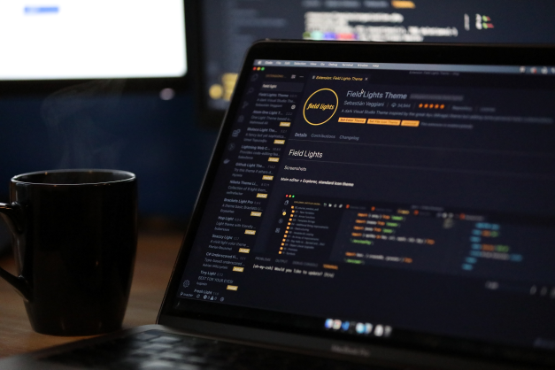

Meu nome é Fernando Cidade, sou desenvolvedor Front-end com foco nas stacks .html-5 CSS, Javascript e PHP. Em 2015, tive a oportunidade de estagiar em uma empresa de Tecnologia iniciando com Suporte e Manutenção de Redes, e no mesmo ano tive o meu primeiro contato com o Javascript e o HTML5-CSS e PHP. Após uns 3 anos com o suporte, me interessei pelo desenvolvimento de software e tive minha primeira oportunidade como desenvolvedor em 2019.
Um resumo da minha trajetório como desenvolvedor
No decorrer desta trajetória, tive a oportunidade de trabalhar com o desenvolvimento no Visual Studio logo nas primeiras versões (.NET Framework 1.0 e 1.1), com a linguagem VB.NET e após o C#. Gosto muito de desafios e novos frameworks e tenho incluído aqui neste repositório alguns exemplos do que estou pesquisando. Linguagens nas quais sou especialista: .NET Core / .NET Framework, PHP Laravel (LAMP Stack), Node (Express / Nest.js), Angular (2.x) / AngularJs, VueJs. Habilidades DevOps e Certificado em MSSQL Server. Criei este canal para criação de artigos em 2021, onde deixo um pouco de minhas experiências do dia a dia e minha visão de mundo como desenvolvedor. Esta foi uma maneira que arrumei de aprofundar nos assuntos técnicos fora do meu trabalho e mantenho este canal desde então. Espero que te ajude de alguma forma na sua trajetória assim como quando compartilho algo, me ajuda também a formar uma opinião sobre o assunto.
]Acredito que soluções tecnológicas resolvem problemas de organizações e usuários, adoro novos desafios, que exploram novas formas de pensar. Tenho sólidos conhecimentos em diversas tecnologias relevantes. Eu sou um desenvolvedor Front-end.